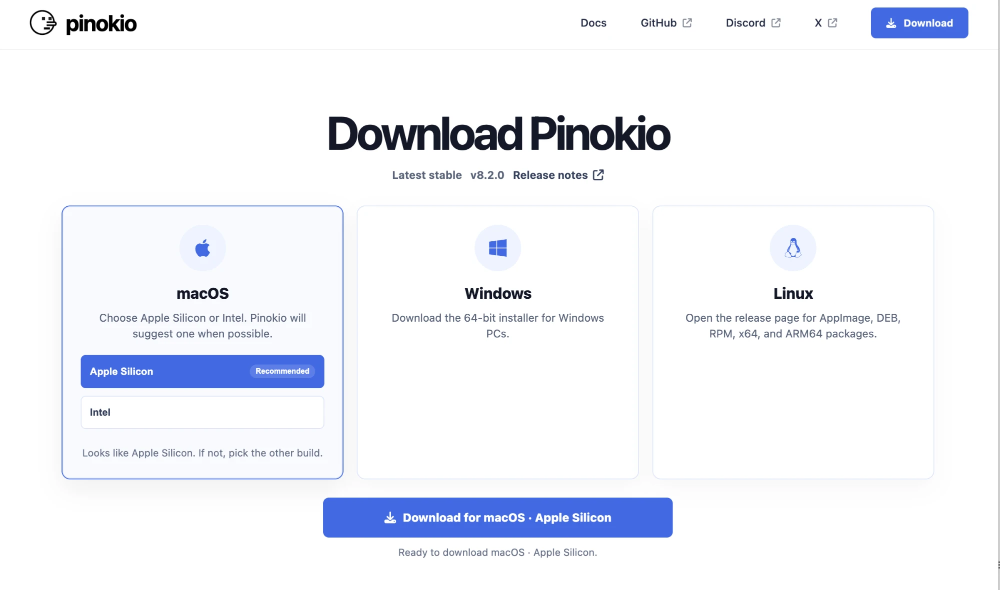
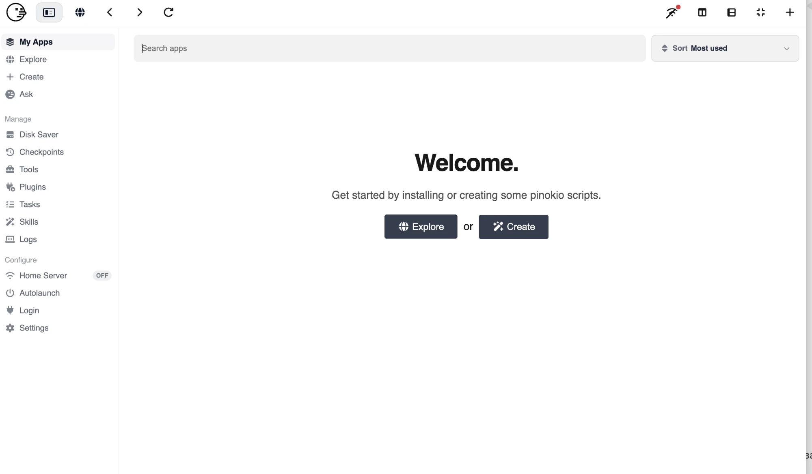
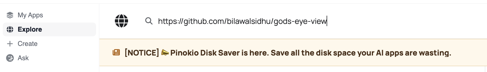
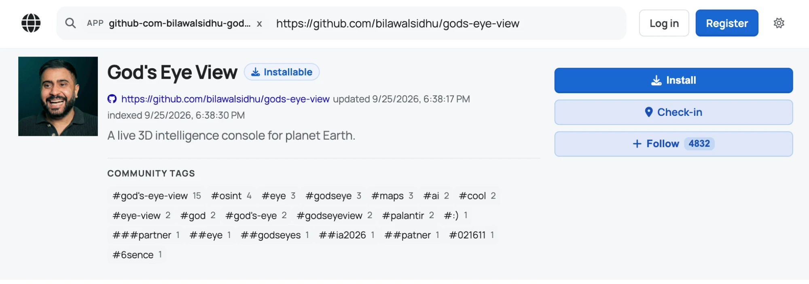
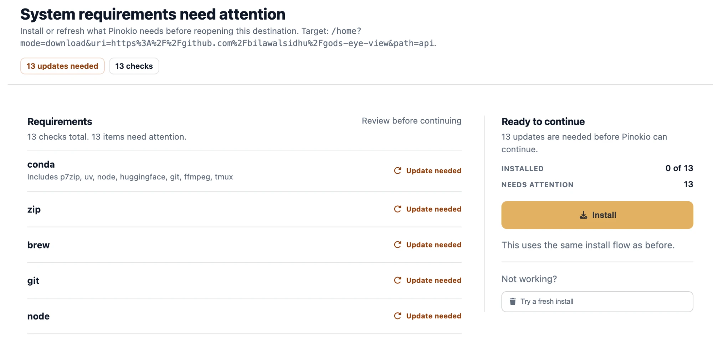
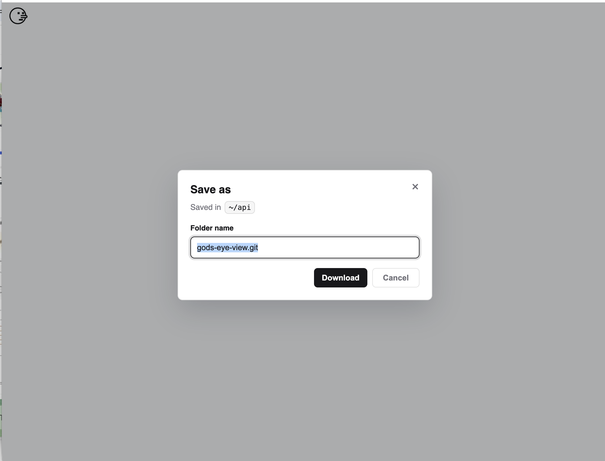
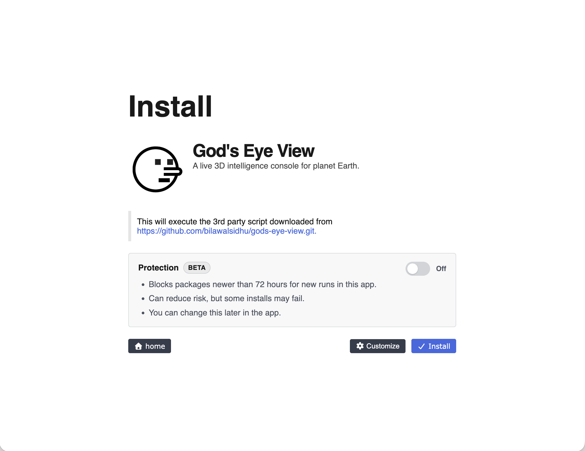
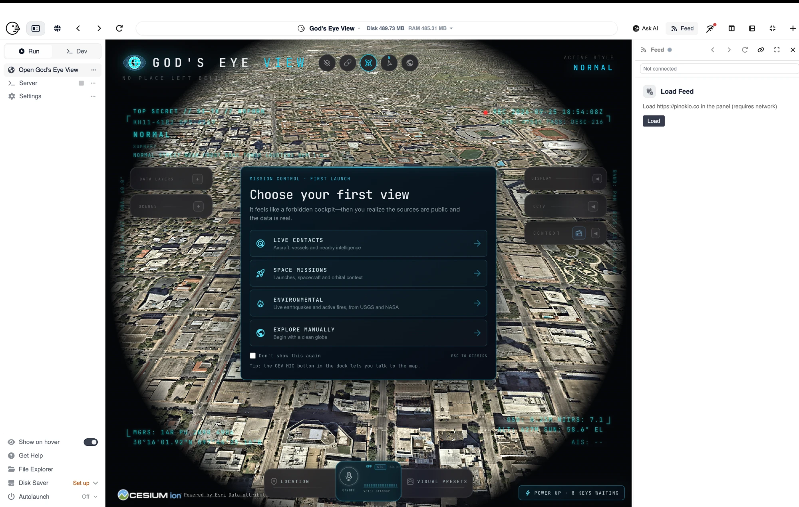

Живая 3D-карта Земли: самолёты, корабли, пожары, спутники — прямо у вас на компьютере. Показываю каждый шаг со скриншотом, чтобы вы сверялись со своим экраном.
God's Eye View ставится через Pinokio — приложение, через которое устанавливают другие приложения
Всю техническую часть Pinokio берёт на себя: сам скачивает нужные компоненты и сам раскладывает их по местам. От вас — несколько нажатий и немного ожидания. Дальше каждый шаг по порядку, со скриншотом.
Заходим на страницу скачивания Pinokio и выбираем свою систему — macOS, Windows или Linux. Нажимаем Download.
Дальше устанавливаем Pinokio как обычное приложение и открываем его.

Страница Download Pinokio: три карточки систем, нужная обычно подсвечена сама.
После запуска вы увидите экран Welcome. Слева будет список разделов: My Apps, Explore, Create и другие.
Нам нужен Explore — нажимаем на него.

Пусто и ничего не установлено — так и должно быть на старте.
Вверху есть строка поиска. Вставляем туда эту ссылку и нажимаем Enter:

Жёлтую полоску с надписью NOTICE можно не читать — это просто новость от Pinokio.
Откроется страница God's Eye View. Справа будет большая синяя кнопка Install — нажимаем её.

Кнопки Log in и Register вверху можно игнорировать, аккаунт заводить не нужно.
Если вы ставите приложение через Pinokio впервые, появится экран System requirements need attention и список из 13 пунктов: conda, zip, brew, git, node и так далее.
Не пугайтесь, это не ошибка. Pinokio просто говорит, что ему нужно доустановить свои рабочие детали.
Справа нажимаем большую жёлтую кнопку Install.

В самом списке ничего нажимать не надо — ни conda, ни git, ни node.
Это самый долгий момент. Ничего не закрываем и просто ждём — когда всё встанет, Pinokio сам продолжит установку God's Eye View.
Выскочит маленькое окошко Save as, и в нём уже будет написано имя папки: gods-eye-view.git
Ничего менять не нужно — просто нажимаем Download.

Имя папки уже выделено синим — не удаляйте его, оставьте как есть.
Откроется экран Install с названием God's Eye View. Внизу справа синяя кнопка Install — нажимаем её.
Кнопку Customize не трогаем, переключатель Protection тоже можно оставить как есть.

Надпись про сторонний скрипт — обычное предупреждение Pinokio, оно тут у всех приложений.
Теперь Pinokio скачивает и ставит само приложение. Это может занять время — оставьте окно открытым и займитесь чем-нибудь другим.
Когда установка закончится, God's Eye View запустится сам. Вы увидите большую карту, а поверх неё окно Choose your first view с четырьмя вариантами: Live Contacts, Space Missions, Environmental и Explore Manually.

Вот так выглядит рабочее окно. Установка на этом закончена.
Тут уже можно просто смотреть:
Заново ничего устанавливать не нужно. Открываете Pinokio и идёте по пути:
Поставили? Напишите мне, что нашли на карте 🤍
Такие находки и разборы я выкладываю у себя в канале — @maysoulme
Этот гайд — одна деталь. На интенсиве мы собираем из таких деталей систему: стратегию, контент и своих ИИ-ассистентов под ваш блог.
ИнтенсивГайды — это отдельные детали. На интенсиве мы собираем из них систему, чтобы блог рос не от одного удачного ролика, а от того, что за ним стоит.
Дело не в удаче и не в количестве роликов. Дело в том, кому вы говорите, что именно и куда ведёте человека дальше.
Вечный доступ · чат поддержки со мной · формат VIP с личным сопровождением